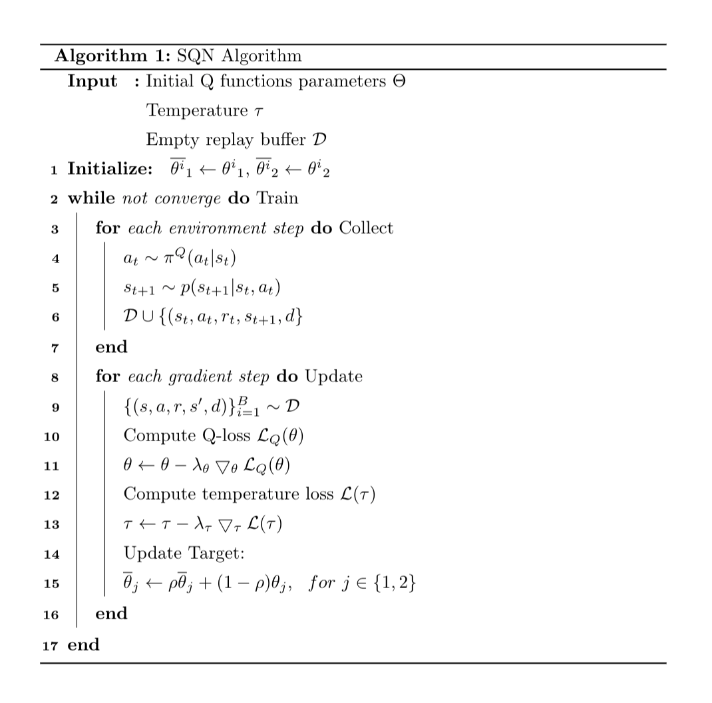

SQN¶
Overview¶
Soft Q-learning is an extension from many previous work, including: Leverage the Average: an Analysis of KL Regularization in Reinforcement Learning , Soft Actor-Critic Algorithms and Applications, Equivalence Between Policy Gradients and Soft Q-Learning and so on. It an off-policy Q-learning algorithm, but adopt the maximum entropy framework, make an connection between Policy Gradients and Q-learning.
Quick Facts¶
SQN is implemented for environments with Discrete action spaces.(i.e. Atari, Go)
SQN is an off-policy and model-free algorithm, and use Boltzmann policy to do exploration.
SQN is based on Q-learning algorithm, which optimizes an Q-function and construct a policy from Q-function
SQN is implemented for Multi-Discrete action space as well
Key Equations or Key Graphs¶
An entropy-regularized version of RL objective could lead to better exploration and stability. The most general way to define entropy-augmented return is
\(\bar{\pi}\) is some “reference” policy, \(\tau\) is a “temperature” parameter, and \(H\) is the Kullback-Leibler divergence. Note that the temperature \(\tau\) can be eliminated by re-scaling the rewards. So the definition of Q-function changing to:
Additionally, an optimal policy called Boltzmann-Policy can be derived by varying the action probabilities as a graded function of estimated value:
Generally speaking, we can use an uniformly $bar{pi} \sim U$, so $r_t - \tau \mathrm{KL}_t = r_t + \mathcal{H} - \log{mathcal{N}}$. Thus optimal policy additionally aims to maximize its entropy at each visited state and the TD-target becomes:
Pseudocode¶
\begin{algorithm}[tp]
\setstretch{1.35}
\DontPrintSemicolon
\SetAlgoLined
\SetKwInOut{Input}{Input}\SetKwInOut{Output}{Output}
\Input{Initial Q functions parameters $\Theta$ \\
Temperature $\tau$ \\
Empty replay buffer $\mathcal{D}$ \\
}
\textbf{Initialize: }
$\overline{\theta^i}_1 \leftarrow {\theta^i}_1$, $\overline{\theta^i}_2 \leftarrow {\theta^i}_2$
\While(Train){not converge}{
% \tcc{comments on code}
\For(Collect){each environment step}{
$a_t \sim \pi^{Q}(a_t|s_t)$ \\
$s_{t+1} \sim p(s_{t+1}|s_t, a_t)$ \\
$\mathcal{D} \cup \{(s_t, a_t, r_t, s_{t+1}, d\}$
}
\For(Update){each gradient step}{
$\{(s, a, r, s^\prime, d)\}^B_{i=1} \sim \mathcal{D}$
Compute Q-loss $\mathcal{L}_Q(\theta)$
$\theta \leftarrow \theta - \lambda_{\theta} \bigtriangledown_{\theta} \mathcal{L}_Q(\theta)$
Compute temperature loss $\mathcal{L}(\tau)$
$\tau \leftarrow \tau - \lambda_{\tau} \bigtriangledown_{\tau} \mathcal{L}(\tau)$
% Update target network\\
Update Target: \\
$\overline{\theta}_j \leftarrow \rho {\overline{\theta}}_j + (1-\rho) {\theta}_j, \ \ \text{for} \ j \in \{1,2\}$
}
}
\caption{SQN Algorithm}
\end{algorithm}
Extensions¶
SQN can be combined with:
SQN could use a separate policy network, which called SAC-Discrete
SQN is closely related to general Regularization Reinforcement Learning which could have many form, but our implementation utilize auto adjust temperature and remove many unclear part Leverage the Average.
SQN is using Boltzmann policy for construct policy from Q-function, it’s although called softmax policy.
Some analyst draw connection between Soft Q-learning and Policy Gradient algorithms such as Equivalence Between Policy Gradients and Soft Q-Learning.
Some recent research treats RL as a problem in probabilistic inference, like MPO, VMPO they have close relationship to SQN, SAC and the max-entropy framework, it an activate area.
Implementation¶
Soft Q loss
# Target
with torch.no_grad():
q0_targ = target_q_value[0]
q1_targ = target_q_value[1]
q_targ = torch.min(q0_targ, q1_targ)
# discrete policy
alpha = torch.exp(self._log_alpha.clone())
# TODO use q_targ or q0 for pi
log_pi = F.log_softmax(q_targ / alpha, dim=-1)
pi = torch.exp(log_pi)
# v = \sum_a \pi(a | s) (Q(s, a) - \alpha \log(\pi(a|s)))
target_v_value = (pi * (q_targ - alpha * log_pi)).sum(axis=-1)
# q = r + \gamma v
q_backup = reward + (1 - done) * self._gamma * target_v_value
# alpha_loss
entropy = (-pi * log_pi).sum(axis=-1)
expect_entropy = (pi * self._target_entropy).sum(axis=-1)
# Q loss
q0_loss = F.mse_loss(q0_a, q_backup)
q1_loss = F.mse_loss(q1_a, q_backup)
total_q_loss = q0_loss + q1_loss
Sample from policy
logits = output['logit'] / math.exp(self._log_alpha.item())
prob = torch.softmax(logits - logits.max(axis=-1, keepdim=True).values, dim=-1)
pi_action = torch.multinomial(prob, 1)
Alpha loss
alpha_loss = self._log_alpha * (entropy - expect_entropy).mean()